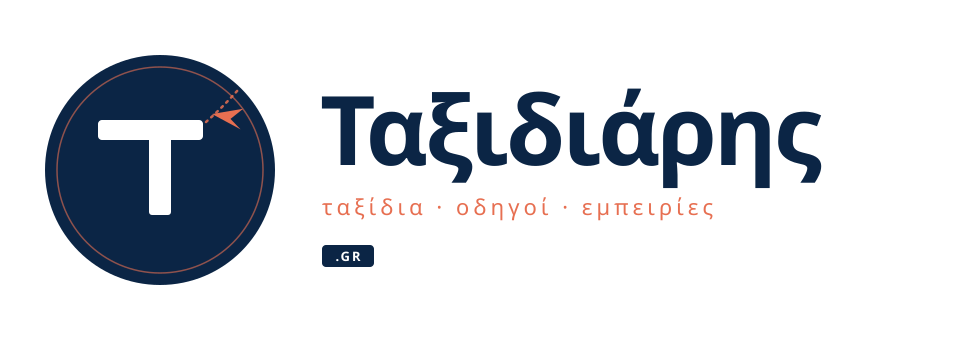

Τρεις κατευθύνσεις. Κοινή παλέτα: navy #0B2545 + coral #E76F51
Καθαρή τυπογραφία, ο τόνος της «ά» γίνεται χάρτινο αεροπλανάκι. Δυνατή αναγνωρισιμότητα, premium αίσθηση, δουλεύει άψογα σε header, email signature, social covers.
Στρογγυλό badge με στυλιζαρισμένο «Τ» όπου η οριζόντια κεραία λειτουργεί ως διάδρομος απογείωσης. Ιδανικό για favicon/avatar (μόνο το badge) και πλήρες σε header.

Ρετρό κυκλική σφραγίδα με πυξίδα, ελληνικό wordmark κυκλικά και warm paper υπόβαθρο. Διακριτό stamp για φωτογραφίες, watermark στους οδηγούς, προσωπική ταυτότητα.